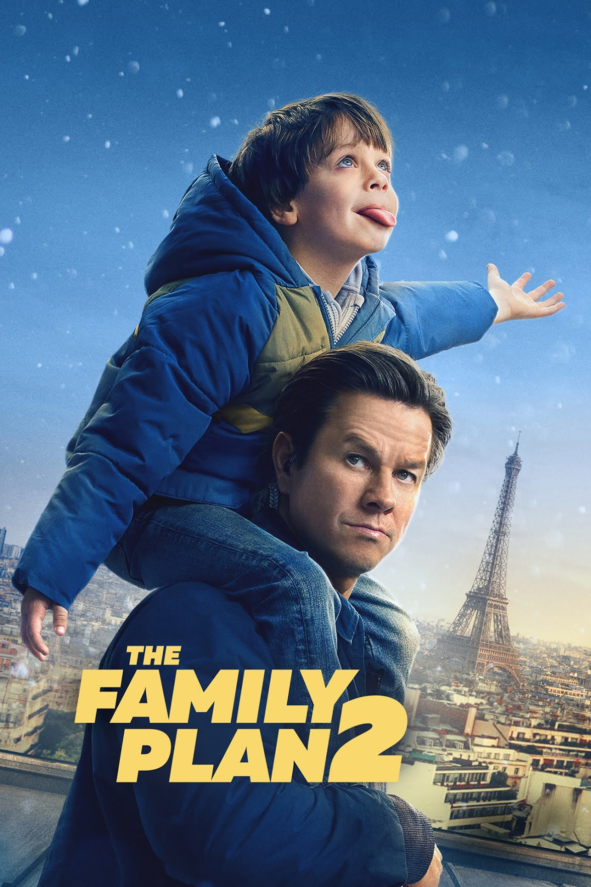
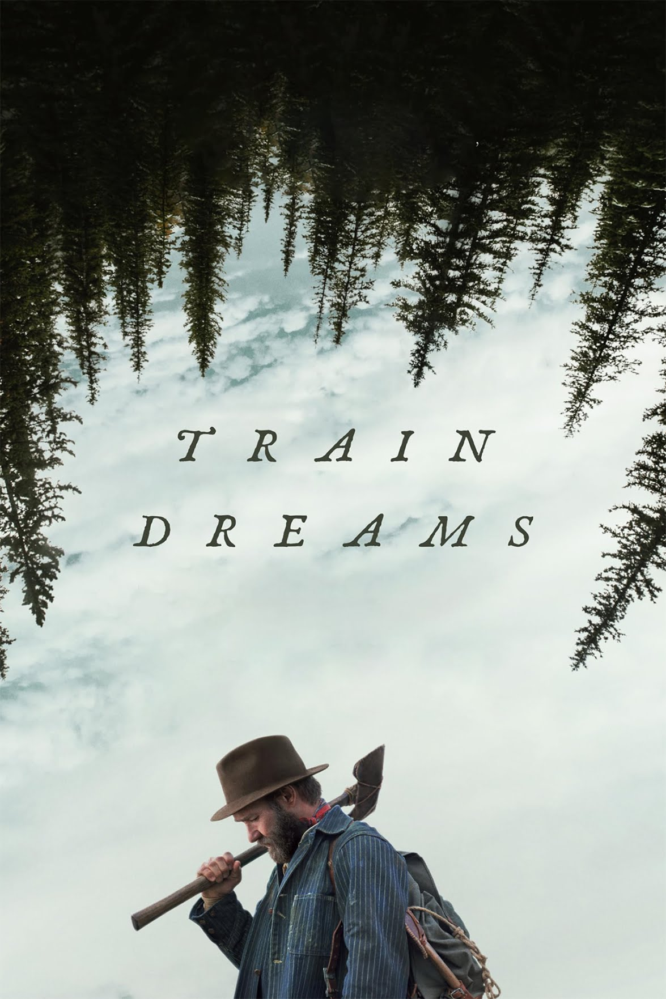
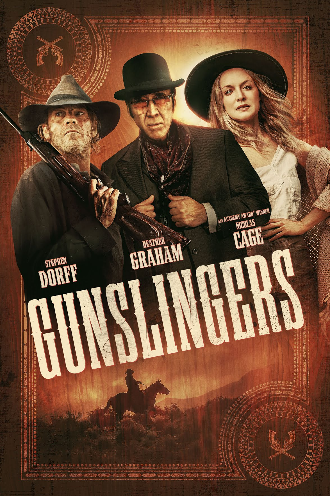
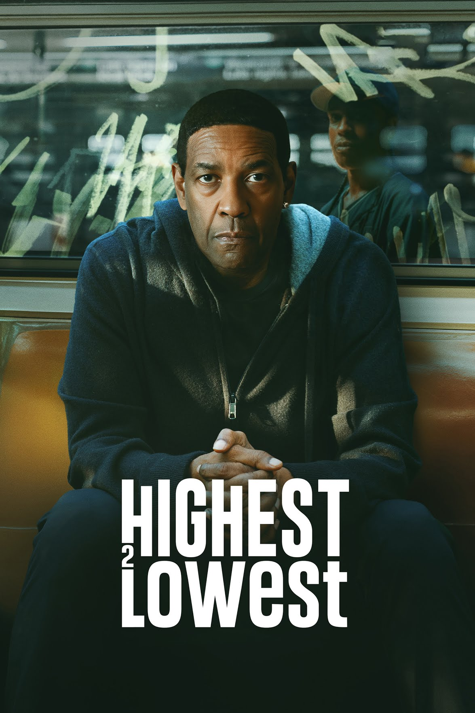

The Family Plan 2
The Family Plan 2 is a 2025 American action comedy film that is a sequel to the 2023 film The Family Plan with Mark Wahlberg, Michelle Monaghan, Zoe Colletti, and Van Crosby reprising their roles and with Kit Harington also starring. The film is directed by Simon Cellan Jones and written by David Coggeshall. It was produced by Apple Studios and distributed on Apple TV on November 21, 2025.
0

Train dreams
Train Dreams is a 2025 American drama film directed by Clint Bentley, who co-wrote the screenplay with Greg Kwedar, based on the 2011 novella by Denis Johnson. The film stars Joel Edgerton, Felicity Jones, Clifton Collins Jr., Kerry Condon, and William H. Macy. Train Dreams had its world premiere at the 2025 Sundance Film Festival on January 26, 2025, and was released in select cinemas in the United States on November 7, 2025, before its streaming debut by Netflix on November 21, 2025. The film received critical acclaim, with praise going to Bentley's direction and Edgerton's performance.
0
The Conjuring: Last Rites
The Conjuring: Last Rites is a 2025 American supernatural horror film directed by Michael Chaves and written by Ian Goldberg, Richard Naing, and David Leslie Johnson-McGoldrick. The film is the ninth installment in The Conjuring film series, and is based on the real-life investigations of the Smurl haunting case.[4] It stars Patrick Wilson and Vera Farmiga, who reprise their roles as paranormal investigators Ed and Lorraine Warren, along with Mia Tomlinson and Ben Hardy.
0

Gunslingers
Gunslingers is a 2025 American Western action film written, produced, directed, and edited by Brian Skiba. It stars Stephen Dorff, Heather Graham, and Nicolas Cage. In May 2024, it was announced that post-production had begun on a western action film titled Gunslingers, after filming occurred in Cave City, Kentucky, Barren County, Hart County, and Edmonson County. Brian Skiba wrote, co-produced, and directed the film, with Nicolas Cage, Stephen Dorff, Heather Graham, Scarlet Rose Stallone, Randall Batinkoff, Tzi Ma, Costas Mandylor, Cooper Barnes, and Bre Blair starring.
0

Highest 2 Lowest
Highest 2 Lowest is a 2025 American crime thriller film directed by Spike Lee from a screenplay by Alan Fox. It is an English- language remake of Akira Kurosawa's 1963 Japanese film High and Low, itself based on Ed McBain's 1959 novel King's Ransom. The film stars Denzel Washington, Jeffrey Wright, Ilfenesh Hadera, ASAP Rocky, John Douglas Thompson, Dean Winters, LaChanze, Princess Nokia, and Ice Spice (in her film debut). It is the fifth collaboration between Lee and Washington and the first since Inside Man (2006). Principal photography began in New York City in March 2024 and wrapped that May. Highest 2 Lowest had its world premiere out of competition of the Cannes Film Festival on May 19, 2025, and was released theatrically in the United States by A24 on August 15 before becoming available on Apple TV+ on September 5.
0